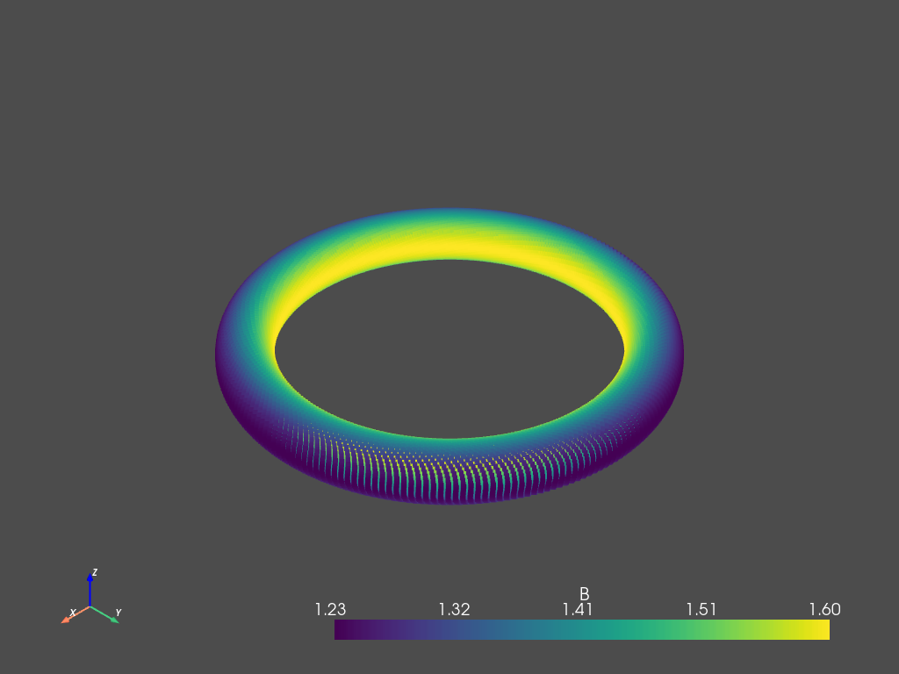
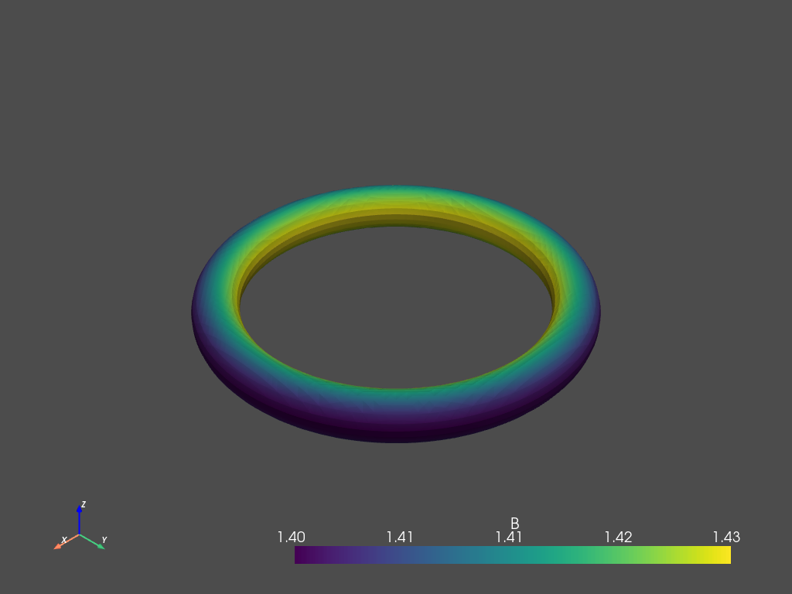

Field line following (J-TEXT)
import fusionsc as fsc
import numpy as np
import pyvista as pv
from fusionsc.devices import jtext
pv.set_jupyter_backend('static')
We use a 2D equilibrium as a baseline field
efitExample = jtext.exampleGeqdsk()
field = fsc.magnetics.MagneticConfig.fromEFit(efitExample).compute(jtext.defaultGrid())
Let’s follow a field line (which gives us position and field values)
help(fsc.flt.followFieldlines)
Help on AsyncMethodDescriptor in module fusionsc.flt:
followFieldlines(points, config, recordEvery=1, **kwargs) -> Any
Follows magnetic field lines.
Mostly equivalent to :code:`(lambda x: return x["fieldLines"], x["fieldStrengths"])(trace(points, config, recordEvery, **kwargs))`.
Parameters:
- points: Starting points for the trace. Can be any shape, but the first dimension must have a size of 3 (x, y, z).
- config: Magnetic configuration. If this is not yet computed, you also need to specify the 'grid' parameter.
- recordEvery: Number of tracing steps between each recorded point.
Returns:
A tuple holding:
- An array of shape `points.shape + [max. field line length]` indicating the field line point locations
- An array of shape `points.shape[1:] + [max. field line length]` indicating the field strength at those points
*Note* Has :ref:`asynchronous variant<Asynchronous Function>` '.asnc(...)' that returns Promise[...]
startPoint = [1.2, 0, 0]
fieldLine, b = fsc.flt.followFieldlines(startPoint, field, recordEvery = 10, stepSize = 0.01, turnLimit = 400)
Now we run Poincaré plots for a few different cases
cloud = pv.PolyData(fieldLine.T)
cloud.point_data['B'] = b
pv.plot(cloud)

We can also interpolate a surface from the provided points. Note: This is a function provided by PyVista.
surf = cloud.reconstruct_surface().interpolate(cloud)
pv.plot(surf)
